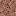
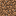
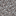
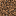
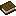

Available materials
This is a list of all major crafting materials that are obtainable in this challenge.
Common Materials
These eight blocks make up the overwhelming majority of the underground.
| Material | Location found | Use(s) | |
|
|
Stone | Most common block above Y:0 | One of the three most used crafting materials. Uses include Furnaces and stone tools. |
|
|
Deepslate | Most common block below Y:8 | Alternative to Stone for use in some crafting recipes (e.g. tools). It looks better, but takes much longer to mine. |
|  | Granite | Y:0 to Y:128, most common below Y:60 | Decorative block with no other uses. Has similar properties to Stone. |
|
|
Diorite | Y:0 to Y:128, most common below Y:60 | Decorative block with no other uses. Has similar properties to Stone. |
| Andesite | Y:0 to Y:128, most common below Y:60 | Decorative block with no other uses. Has similar properties to Stone. | |
|
|
Tuff | Below Y:0 | Decorative block with no other uses. Has similar properties to Stone.
Unlike Granite, Diorite, and Andesite, Tuff can't be crafted into slabs, stairs, walls, or a polished version. |
|  | Dirt | Y:0 to Y:160, and near the surface | Used in most plant farms. Can also be converted into mud with a Water Bottle. |
|  | Gravel | Found at every elevation | Has the unique property of falling when placed; useful for constructing easily-removable pillars,
for descending from high heights, and for filling in lakes and lava pools. Breaking Gravel can produce Flint. Can be crafted with sand, the other falling block which is rare underground, to make concrete. |
Uncommon Materials
The ores can be found anywhere in the world, though only in specific elevation ranges.
The other materials are found as decorations in specific structures and/or cave biomes .
| Material | Location found | Use(s) | |
|
|
Coal | Above Y:0, most common high up at Y:96 and Y:136 | Used as fuel, and for crafting torches. |
| Copper | Y:-16 to Y:112, most common at Y:48, more common in Dripstone Caves, Ore Veins found above Y:0 | Used in a few crafting recipes, but its primary use is as a decorative block. | |
| Iron | Below Y:72 and above Y:84, most common at Y:16 and Y:232, Ore Veins found below Y:0 | One of the three most used crafting materials. Can be used in tools and armor. | |
| Lapis Lazuli | Below Y:64, most common at Y:0 Note: most of the ore won't spawn if exposed |
Used to dye things blue, or to enchant items at an Enchanting Table. | |
|
|
Gold | Below Y:32 (or Y:256 below Mesas), most common at Y:-48 and Y:-16 (and above Y:32 below Mesas) | Primary use is bartering with Piglins in the Nether. Also used in a few crafting recipes, and to make useless tools and weak armor. |
| Diamond | Below Y:16, more common the deeper you go, also found in Fossils if below Y:0 | Needed to craft the two best sets of tools and armor in the game, but doesn"t have many other uses. | |
| Redstone | Below Y:15, more common the deeper you go below Y:-32 | Used to build redstone circuitry, which is useful for automatic farms and contraptions. Redstone torches are an alternative light source, albeit a bad one. Finally, redstone is used to extend the duration of potions. |
|
| Emerald | Above Y:-16, most common high up at Y:232 (only found below mountains and Windswept Hills) | Used as a currency for trading with Villagers. Otherwise almost useless. | |
| Magma Block | Underwater, below Ruined Portal, the Nether | When placed below water, this block produces a column of bubbles that sucks anything above it
downward. It deals fire damage to any mob or player standing on top, and if ignited, the fire never burns itself out. |
|
| Obsidian | Water and Lava interactions, Ruined Portals | Obsidian takes a long time to mine, even with the proper tools, and is blast resistant. Besides building, it is also used to craft Ender Chests and Enchanting Tables, and for the frame of Nether Portals. |
|
| Glow Lichen | Caves and open spaces | Glow Lichen is an alternative light source that is dim like a redstone torch. Unlike torches, it can be placed on ceilings. | |
|
|
Amethyst | Amethyst Geodes | The block can be used for decoration, or in the construction of Sculk Sensor networks. Amethyst Shards are used as a crafting ingredient. |
| Calcite | Amethyst Geodes | Yet another decorative Stone variant with no other uses. Calcite is easier to mine than other forms of stone. | |
|
|
Smooth Basalt | Amethyst Geodes and Ancient Cities | Basalt is a decorative Stone variant typically found in the Nether. Smooth Basalt can"t be crafted back into regular or Polished Basalt. |
|
|
Dripstone | Dripstone Caves | Pointed Dripstone is used in lava farms, and can drain Mud to make Clay. It also increases fall damage when landed on, and deals heavy damage when it falls itself, making it effective as a defensive weapon. |
|
|
Clay | Lush Caves | Cooked to make Bricks (not to be confused with Mud Bricks) and Terracotta, two decorative blocks. Bricks can also be crafted into pots. |
|
|
Moss | Lush Caves | When bone meal is used on it, it replaces nearby dirt and stone with more Moss.
It also produces tall grass and Azaleas. Moss can be mined very quickly with a hoe,
more quickly than Stone with a pickaxe, making this the quickest way of
removing Deepslate without explosions. Moss can also be composted to get more Bone Meal. In fact, optimally growing Moss and composting it produces more Bone Meal than was used to grow the Moss in the first place. |
|
|
Wood | Abandoned Mineshafts, or farmed from Azalea trees | One of the three most used crafting materials. Wood is especially important, since the crafting table and all tools' handles are made from it. Logs can be smelted for charcoal (a coal substitute), which other forms of wood can't. Oak wood is obtained from Azalea trees, Abandoned Mineshafts, and Strongholds, whereas Dark Oak wood is obtained from Mesa Mineshafts and Ancient Cities. |
|
|
Vine | Lush Caves and Jungle | Vines can be climbed by holding the jump button, or if against a wall, by walking into the wall. Compared to other types of vines, regular Vines naturally grow indefinitely downward, spread horizontally, can"t be bone mealed, and are placed on the side of blocks instead of the top or bottom. |
| Glow Berries | Lush Caves | When placed on the underside of a block, they form Cave Vines that can be climbed
like normal Vines. Using Bone Meal does not cause them to grow downward; instead,
it causes the block bone mealed to grow edible Glow Berries that produce light
and can be harvested with right click.
Compared to other types of vines, Cave Vines can be placed only on certain types of blocks, will only grow so far down naturally, and aren't grown downward by Bone Meal, making the other types of vines better for infrastructure purposes. |
|
| Sculk | Deep Dark | Can be mined for EXP, or harvested with Silk Touch. Sculk Sensors can be used for wireless redstone and Sculk Catalysts for farming more Sculk, but natural Sculk Shriekers are a major hazard and should be avoided. | |
| Bedrock | Bottom of the world | Bedrock is an unminable, blastproof block that generates at the absolute bottom of the world. It can only be removed using glitches in the game, and there is nothing below it but an endless void. |
Near Surface Materials
The materials that make up the world surface can sometimes be found on the floor of near-surface caves. Some biomes also have much thicker than normal surfaces that caves can run through.
| Material | Location found | Use(s) | |
|
|
Grass Block | Near surface: most places | When Bone Mealed, grows tall grass and flowers. Allows sheep to regrow their wool. |
| Rooted Dirt | Lush Caves | Generated under Azalea trees. Can be hoed to turn it back to regular dirt. | |
|  | Coarse Dirt | Near surface: Wooded Badlands, Windswept Savanna, Old Growth Taiga | Dirt, but coarser. Can be hoed to turn it back to regular dirt. |
| Mycelium | Near surface: Mushroom Fields | Mushrooms can be placed on top in any light level. | |
| Podzol | Near surface: Bamboo Jungle, Old Growth Taiga | Mushrooms can be placed on top in any light level. Doesn't spread like Grass and Mycelium do. | |
| Mud | Near surface: Mangrove Swamp | If you stand on it, you sink in slightly. Can be dried out to get Clay by putting Pointed Dripstone under it. Crafting it with Wheat allows for the creation of decorative Packed Mud. | |
| Packed Ice | Ancient City, Near surface: Ice Spikes, Frozen Peaks, Frozen Ocean | Slippery. Can't be collected without Silk Touch. | |
| Snow | Ancient City, Near surface: Ice Spikes, Grove, Snowy Slopes, Jagged Peaks, Frozen Peaks | Snowballs can be thrown at mobs to deal knockback without damage. Snow blocks can be used to build Snow Golems, which throw snowballs at nearby mobs. | |
|
|
Sand | Near surface: Beach, Desert, Warm Ocean, Badlands (Mesa) | Sand falls like gravel, and can be smelted into Glass or crafted into Sandstone, TNT (with Gunpowder), or Concrete (with Gravel and a dye item) |
| Sandstone | Near surface: Beach, Desert, Warm Ocean, Badlands (Mesa) | Sandstone is another stone-like decorative block. It is easier to mine and blow up than Stone. | |
| Terracotta | Trail Ruins, Near surface: Mesa (Badlands) | Dyeable decorative block. Dyed Terracotta can be smelted into Glazed Terracotta,
another decorative block which has a niche use with redstone since
it can be pushed but not pulled by pistons.
Natural terracotta is often found already dyed in various light and warm colors. |
Rare Materials
These materials are found in structures, either placed or as chest loot, or are dropped by mobs when killed.
| Material | Location found | Use(s) | |
| Netherrack | Below Ruined Portals, the Nether | If ignited, the fire never burns itself out. Can be smelted to make Nether Bricks. | |
| Soul Sand | Ancient Cities, the Nether | When ignited, the fire turns into Soul Fire, which is blue, deals more damage, and never burns out. Slows those who stand on top, makes them sink like mud, and when placed underwater, produces bubble columns that push mobs and items upwards at high speed. Needed to farm Nether Wart and summon the Wither. Finally, when walked on with Soul Speed-enchanted boots, causes the player to move incredibly fast. Soul Soil shares some, but not all, of these properties. | |
| Basalt | The Nether, or when lava touches both Blue Ice and Soul Soil | A decorative Stone-like block. | |
|
|
Wool | Ancient Cities, crafted from String | Used to craft Carpet and Beds. Blocks the vibrations detected by Sculk Sensors and the Warden. |
|
|
Glass | Ancient Cities, from Villagers, smelting Sand | Fully transparent block. Has an obvious use in building. Can also be dyed. |
| Bricks | Trail Ruins, smelting Clay Balls | Building block made of Clay. | |
| Packed Mud | Trail Ruins, crafted from Mud and Wheat | Building block made of Mud. | |
| Cobweb | Abandoned Mineshafts, Stronghold libraries, Igloo | Impedes movement, except that of Spiders and Cave Spiders. If broken with water or a sword, drops String. | |
| Crying Obsidian | Ruined Portals, Piglin bartering (in The Nether) | Obsidian that glows. Can't be used for Nether Portals, but can be used to craft a Respawn Anchor. | |
| Cactus | Igloo | Deals damage when touched, while not in a flower pot. Can be smelted for green dye. | |
|
|
Apple | Stronghold, Igloo | A food item. Can also be used to craft Golden Apples. |
|
|
Bamboo | Fishing below Jungles | Used as a wood substitute, needed to craft Scaffolding. |
|
|
Bone Meal | Skeletons, Fossils, composting | Fertilizer for crops and plants. Can also be crafted into white dye. |
|
|
String | Cobwebs, killing Spiders, Monster Room and Desert Pyramid chests, Jungle Temple | Used to craft Bows, Fishing Rods, and most importantly, Wool. Can also be placed down as tripwire. |
|  | Book | Stronghold library, Shipwreck map chests, Villagers, Fishing junk, most loot chests (as Enchanted Books) | 46 of them are needed to create a full Enchanting setup. Can also store enchantments, or be converted to a writable Book and Quill with a Feather and Ink Sac. |
| Paper | Stronghold library, Shipwreck map chests | Needed in several crafting recipes. | |
| Sugar | Witches | Needed to brew Speed potions, or to craft Fermented Spider Eyes, which are used in Weakness, Slowness, Harming, and Invisibility potions. | |
|
|
Name Tag | Fishing, Villagers, various structure chests | After naming the Tag in an Anvil, right click a mob to name it. Named mobs do not despawn. |
|
|
Saddle | Fishing, Villagers, various structure chests | Needed to ride Striders |
Nether
These materials can be found in the Overworld, but specifically in this challenge the easiest way of getting them is from the Nether.
| Material | Location found | Use(s) | |
|
|
Mushroom | Caves and open spaces, more common in the Nether | Brown mushrooms are used to craft fermented spider eyes. Both kinds of mushrooms can be grown into huge mushrooms, and both kinds together are used to make mushroom stew. |
| Glowstone | Witches, Villager clerics, the Nether (generates on ceilings) | Used for brewing stronger potions, as a light source, or for crafting and charging Respawn Anchors. | |
|
|
Leather | Fishing, Piglin bartering, Hoglins | Crafting ingredient used in Books and Item Frames. Can also craft weak armor. |